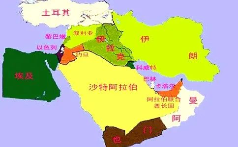

收录于合集 #国政评论 8个

作品简介
【作者】 冯源，国政学人评论员，《光明日报》驻土耳其首席记者。
【排版】 秦子宁
正文
拜登上台以来，美国在中东问题上以新姿态示人，摆脱了特朗普政府时期的莽撞“特”色外交，重新进入美国传统外交风格，其在中东地区政策可以用“一个中心思想、两条具体线路”加以概括。
一句“美国回来了”道出了拜登政府执政的中心思想——美式“自由民主价值观”重新成为美国外交政策的底色和基石，这条规律同样适用于美国中东政策。
在这种思想的指导下，金主沙特的钱再多也不“香”了，照样要搬出卡舒吉案件这样的陈年旧账打压一番；美国国会的以色列游说团说的再天花乱坠，华尔街犹太富商影响力再大，也对美以关系从历史最高点逐渐退热的态势无可奈何。
美国在全世界范围内画了两个大圈，一个叫“民主国家同盟”，一个叫“非民主世界”，站在“道义制高点”对世界各国进行分类，非此即彼。中国显然是被美国政府当做后者了，是美国政府主要针对的对象。在中东，美国同样在用实际行动迫使地区国家选边站队，提醒各国站在美国对立面的代价。中东地区头一个被拉出来杀鸡儆猴的就是沙特，毕竟在他国暗杀一名美国报社记者的做法太不“民主”了。
说到民不民主，土耳其近年来是美国点名道姓的“退步生”。且不说土耳其实行总统制、将圣索菲亚大教堂改回清真寺等做法让“民主老师”美国嗤之以鼻，单单“交友不慎”这一个罪名土耳其就担待不起。土耳其交上哪个朋友是不慎之举了？当然是俄罗斯。近墨者黑，俄罗斯是“非民主世界”的头牌，跟“差生”交朋友慢慢也会成为“差生”。虽然土俄在叙利亚等问题上利益不尽一致，但两国的靠近是全世界都看在眼里的。土耳其采购了俄罗斯的S400防空导弹系统，第一座核电站合同在俄罗斯手上，两国天然气管道项目也已正式开通，可以说土耳其的国防、安全、能源命脉都已基本由俄方掌握。美国既然已经敲打了沙特，那下一个很可能就是土耳其。
为了摆脱“非民主”嫌疑，土耳其近来大刀阔斧地进行一揽子民主改革，开展人权保护运动，聚焦妇女维权、司法公正等议题，对外展示“民主”形象；在克里米亚问题上公开站队乌克兰政府，与东欧国家交好，刺痛俄罗斯敏感神经。这些都为未来土美关系回暖预设基调，土主动向美方靠近迹象明显。
总而言之，美国中东政策是更“严”了，“民主”与否成为一个硬性标准和考核流程，休想蒙混过关。在特朗普时期，沙特靠“钱”笼络美国政府，买了大量美国武器，土耳其靠“言”拉住美国，埃尔多安与特朗普意相投、聊得来，两人私交甚笃，以色列靠“联”拴住美国，美以联盟一时坚不可破。现在这些都要推倒重来。
“民主”标准既立，除伊朗等少数国家外其他中东国家实则无权抉择，只能顺从。中东地区国家实力与美国相距甚远，且区域化程度较低，美国政府从“民主”制高点对地区国家进行威慑，有利于美国更有力地对地区施加控制。而“民主价值观”的背后是美国赤裸裸的政治经济利益，只要中东还有可以压榨的价值，美国就会继续用高举“民主”大棒，挥向那些不听指挥的中东国家。
两条具体路线，一是“挺以”，一是“打伊”。以色列是美国在中东最忠实可靠的盟友，伊朗也仍然是美国在中东地区的最大敌手。只是与特朗普政府相比，挺法变了，打法也换了。
对于传统盟友以色列，拜登希望维系双方关系，帮助以色列在地区发展壮大，维持以在压制伊朗问题上的关键角色，分担美在中东压力。撮合以色列与阿联酋建立“科技+金融”联合发展体系，促进以拓展中东外交空间，但同时也不盲目袒护、纵容以方，避免在巴以问题上牵扯美过多精力。
以色列的中东外交近来可谓高歌猛进、风生水起。与埃及、沙特、阿联酋等阿拉伯国家关系逐渐紧密，甚至在叙利亚问题上进行了一定程度的军事和情报合作，倒是土耳其频频为巴勒斯坦出头，指责海湾国家是伊斯兰世界“败类”。让犹太和阿拉伯民族走近的，是共同的利益和敌人。以色列需要资金、市场和外交空间，这是海湾国家能提供的；海湾国家需要科技、创新和管理经验，以摆脱石油依赖、实现现代化转型，这是以色列的专长，双方一拍即合。共同的敌人就是伊朗，还有一个潜在的竞争对象，那就是土耳其。
在中东地区角逐领导地位的基本是阿拉伯民族、犹太民族、突厥民族和波斯民族，其他民族如库尔德等无法与这“四大家族”同日而语。近年来，阿拉伯民族式微，过去的阿拉伯世界霸主埃及在以“自由民主”为名义发起的“阿拉伯之春”后一蹶不振，新锐沙特又暂时无法扛起大旗。以土耳其为代表的突厥民族异军突起，逐渐成为地区不可忽视的力量，向叙利亚、伊拉克、利比亚和高加索地区四面出击，加上另一个突厥民族国家阿塞拜疆在纳卡战役中大获全胜，突厥民族迎来高光时刻。波斯民族主导的伊朗则在经历了大规模游行示威、高级将领遇刺、首席核专家遇刺、重要核设施接连爆炸和新冠疫情等重重困难之后依然屹立不倒，展现了政权的韧性。
离岸平衡战术是美国渔利的惯用手段。撮合精于计算的犹太民族与处于颓势的阿拉伯民族联手，对抗风头正劲的突厥民族和“又臭又硬”的波斯民族能最大程度扩大美国利益，维持地区平衡均势、遏制地区潜在霸主，将中东牢固置于美国的股掌之中。美国以“自由民主”为名义打压崛起的非盟友国或不听话的盟友国，相似一幕总在不断上演。
在打击伊朗方面，美国的思路也明显变了。在叙利亚问题上，通过低成本、小规模军事行动敲打伊朗，试探俄罗斯和伊朗底线，拉拢更多欧洲盟友展开行动。重回伊核问题谈判桌，不是为了打而打，而是通过打击伊朗来强化“民主同盟”凝聚力，修复在特朗普时期满是裂痕的美欧关系，强化美在中东影响力。
近来，俄罗斯在叙利亚影响力再次大幅提升，由俄罗斯、土耳其和卡塔尔组成的三方外长级磋商机制初步成形，俄对叙未来政治架构建设更加胸有成竹。2017年，俄罗斯、土耳其和伊朗已经组建“阿斯塔纳三方会谈机制”，没有俄罗斯的默许土耳其在叙利亚的军事行动难以开展，土俄在叙战场深度捆绑，而此次伊朗的出局说明土俄与伊朗之间隔阂尚存。同时，也说明俄罗斯在叙问题上独掌大局，是叙战场和谈判桌上的绝对主角。
面对在中东更加积极作为的俄罗斯，美国需要战略抓手，展示影响力和威慑力。叙利亚目前看来已是俄罗斯的掌中之物，美国入局难度较大。打击伊朗因此也可以看做是美抵消俄在中东影响力，与俄进行大国角力的政治工程。
虽然拜登政府中东政策的中心思想和实施路线已经确定，但特朗普政府在中东地区制造了大量负面资产，拜登政府短期内难以恢复美在中东影响力。
一是“难平衡”。巴以、也门、叙利亚等问题使中东持续动荡，美国“重返亚太”制造中东权力真空，土耳其、沙特、伊朗等地区强国得以趁机深度介入地区事务，民族意识空前高涨，纷纷要求实现民族复兴和崛起，中东具备孵化下一个地区霸主的条件。美国为维持地区均势采取打压崛起国的政策，但往后将逐渐力不从心、疲于应付。
二是“难重启”。美欲回到伊朗核协议谈判桌，但同样面临重重困难。美对下一步对伊政策举棋不定。以色列对美国以低成本方式打击伊朗的做法不满，希望美国回到特朗普时期的强硬做派，这可能让美国在中东落得两头不讨好的下场。
三是“难维系”。与土耳其、沙特等盟友之间的关系短期来看有所回落，盟友体系在中东维系成本加大。随着美国全球战略重心转移至亚太地区，中国在中东地区影响力逐步提升，中东“一带一路”沿线重点国家国力渐渐上升，美在中东盟友国家追求自主发展、摆脱束缚的离心力增大，美约束盟友的代价提高。

文章观点不代表本平台观点
好好学习，天天“在看”
国政学人
支持学术公益与知识传播
微信扫一扫赞赏作者 __赞赏
已喜欢，对作者说句悄悄话
取消 __
发送给作者
发送
最多40字，当前共字
上一页 1/3 下一页
长按二维码向我转账
支持学术公益与知识传播
受苹果公司新规定影响，微信 iOS 版的赞赏功能被关闭，可通过二维码转账支持公众号。